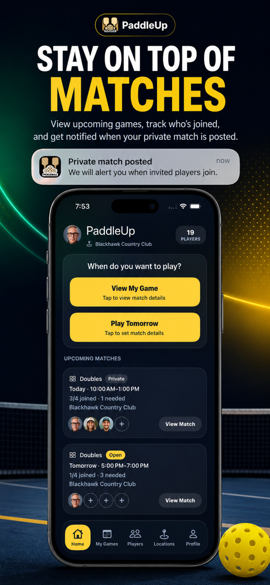

PaddleUp
PaddleUp was created for the moments before a game, when players are trying to figure out who is available, what type of match they want, and when everyone can get on court.
It focuses on open games, private invitations, groups, singles, doubles, alerts, and match coordination.
Pickleball Tracker
Pickleball Tracker was created for the moments after and during play, when players want to remember results, follow trends, and see how their game is developing.
It focuses on match logging, stats, achievements, Apple Watch support, and personal progress.
Created by David Lewis
These apps started from practical pickleball needs: less coordination friction, better personal tracking, and tools that feel simple enough to use before or after a game.
Feedback from real players helps shape what comes next.
Share Feedback